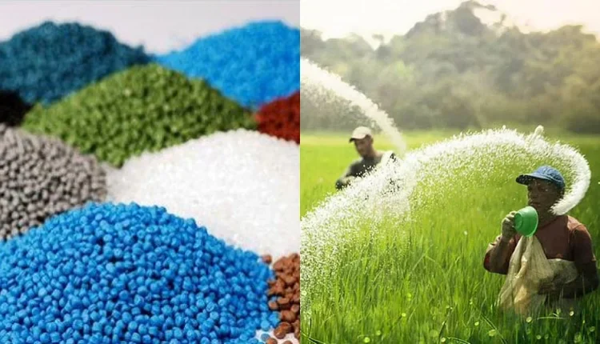

A G R I C U L T U R E
Chemical Fertilizers

“Chemical Fertilizers are synthesized industrially out of known amounts of elements like nitrogen, phosphorus, and potassium.
The term “chemical fertilizer” refers to any number of synthetic compound substances created specifically to increase crop yield. Some chemical fertilizers, for example, are “nitrogenous” — containing nitrogen — while others are phosphate-based. Other fertilizers are potassium.
Complex (or blended) chemical fertilizers often contain a mix of ammonium phosphate, nitrophosphate, potassium, and other nutrients.
Importance of Chemical Fertilizers
When it comes to the advantages of using fertilizers in agriculture, it’s all about efficiency. Chemical fertilizers allow growers to maximize their crop yield on a specific piece of land — the more the plant grows, the better. Fertilizer works to ensure that each piece of land produces as efficiently as possible.
As long as you know how to approach the use of chemical fertilizers, they can even make otherwise poor quality land produce significant yields.
Impact on Soil Health
Soil carries out an important ecological services for the sustenance and survival of life. Soil health management is vital for the maintenance of biodiversity and safeguarding sustainable agricultural production. So, retaining and preserving soil health has prime importance for ecosystem sustainability. The health of soil is regulated by soil properties, that is, physicochemical and biological properties. Modern agriculture is largely dependent upon fertilizers. These are an unavoidable threat to agriculture. Nevertheless, they continue to be vital tools for worldwide food safety. When sustainable agriculture is the global target, the troublesome effects of chemical fertilizers cannot be ignored. Chemical fertilizer plays an essential role in enhancing crop productivity and soil fertility.